BLOG · GRIP · RODAJES EN CANARIAS
Guías para
mover la cámara
Artículos prácticos sobre camera car, dollies, estabilización y producción audiovisual en Canarias, escritos desde la experiencia en rodaje.
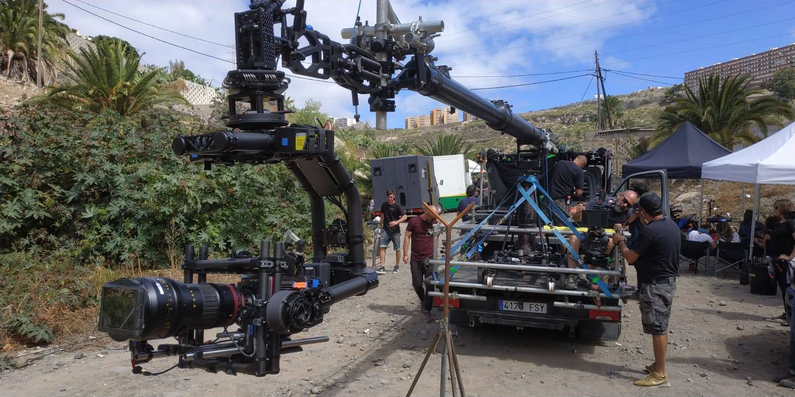
Cabeza estabilizada remota: Movi XL o Ronin 2, cuál elegir
Qué es una cabeza estabilizada remota, cómo se opera y qué diferencias hay entre Movi XL y DJI Ronin 2 en grúa, camera car y rigs.
Leer artículo →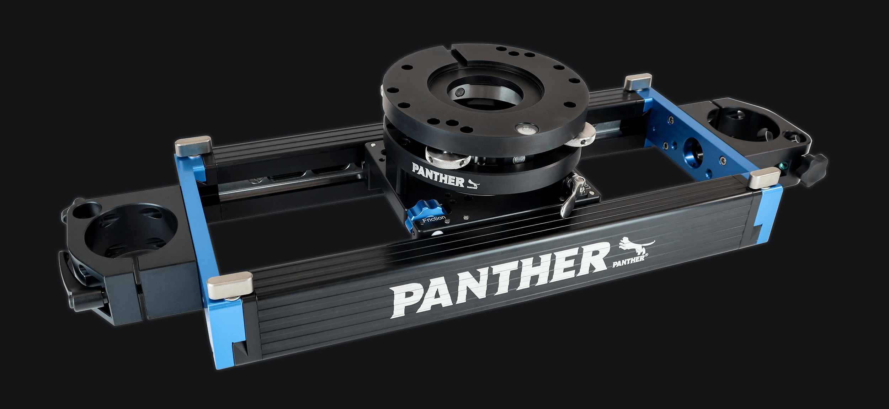
Slider de cámara: qué es, para qué sirve y cuándo usarlo en lugar de un dolly
Qué planos resuelve un slider, cómo se monta, sus límites frente al dolly y cómo sacarle partido en publicidad, producto y videoclip.
Leer artículo →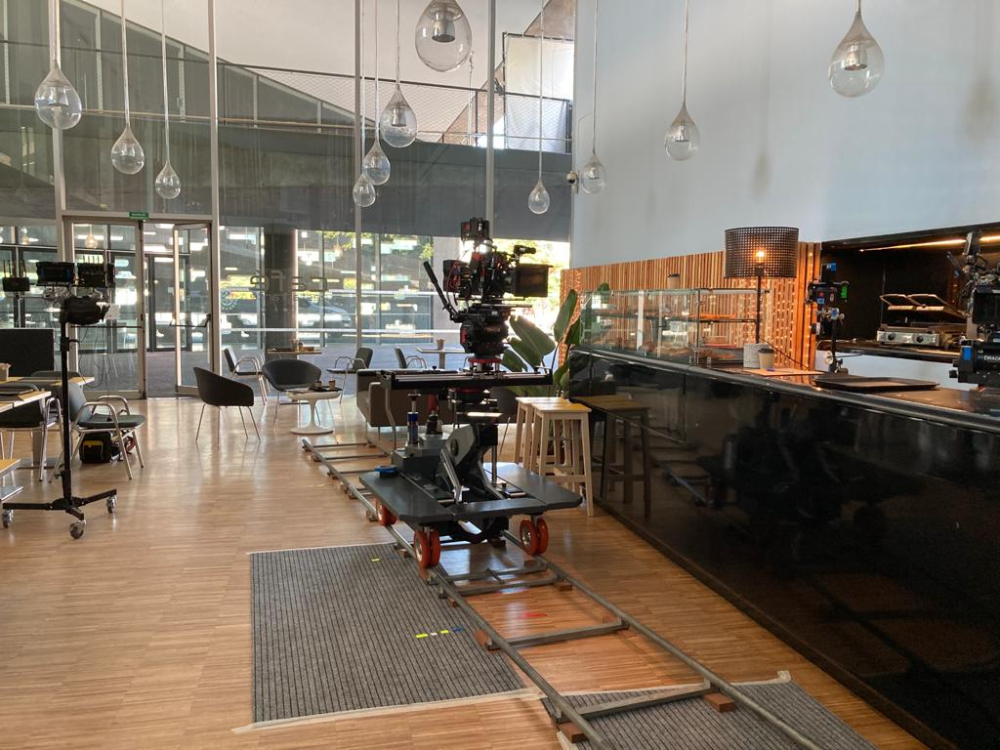
Vías de travelling para dolly: tipos, montaje y nivelación
Vías rectas y curvas, anchos de vía, cómo se nivelan sobre suelos irregulares y cuántos metros pedir para tu travelling.
Leer artículo →Movimientos de cámara en cine: tipos y qué equipo necesita cada uno
Travelling, grúa, panorámica, plano estabilizado o dolly zoom: qué transmite cada movimiento y con qué equipo de grip se rueda.
Leer artículo →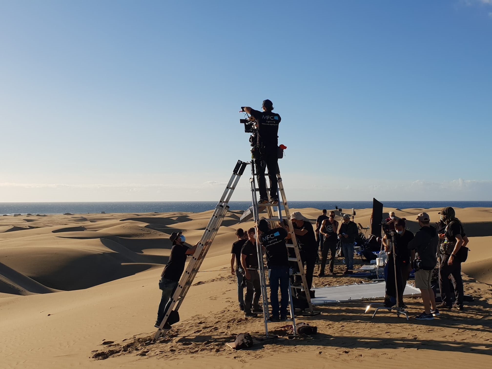
Planos en altura: ladderpod, grúa o dron, cuál elegir
Cómo conseguir un punto de vista elevado según altura, movimiento, localización y permisos, y cuándo conviene cada solución.
Leer artículo →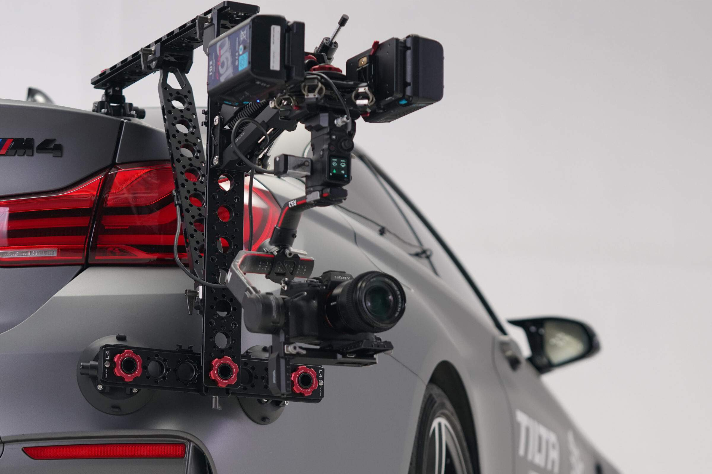
Carmount: cómo montar una cámara en un coche con seguridad
Tipos de carmount, posiciones de cámara, sistemas estabilizados como el Tilta Hydra Alien PRO y las comprobaciones de seguridad antes de rodar.
Leer artículo →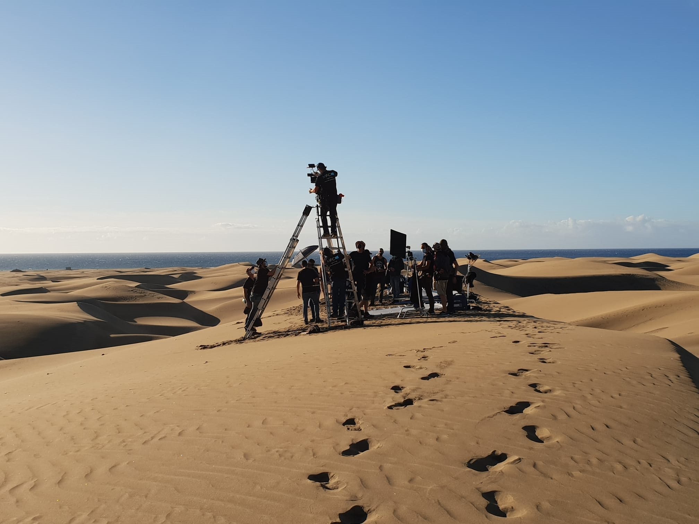
Rodar en playas, dunas y paisajes volcánicos de Canarias: cómo preparar el grip
Arena, malpaís, viento y salitre: cómo afectan al material de grip y qué soluciones funcionan en las localizaciones naturales de las islas.
Leer artículo →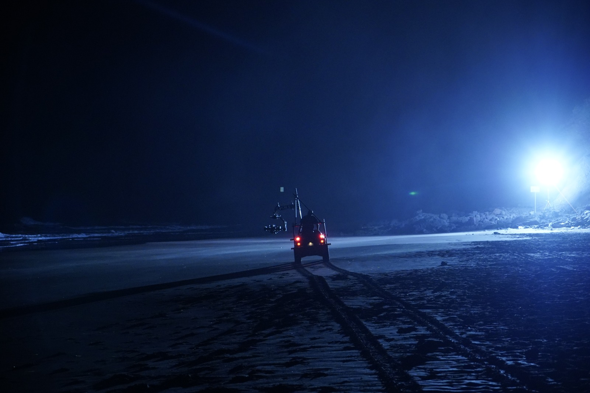
Precision driver en rodajes: qué es, pod car y cómo trabaja con el camera car
Qué hace un conductor de precisión, qué es un pod car y cómo se coordina con el camera car en publicidad y escenas de acción.
Leer artículo →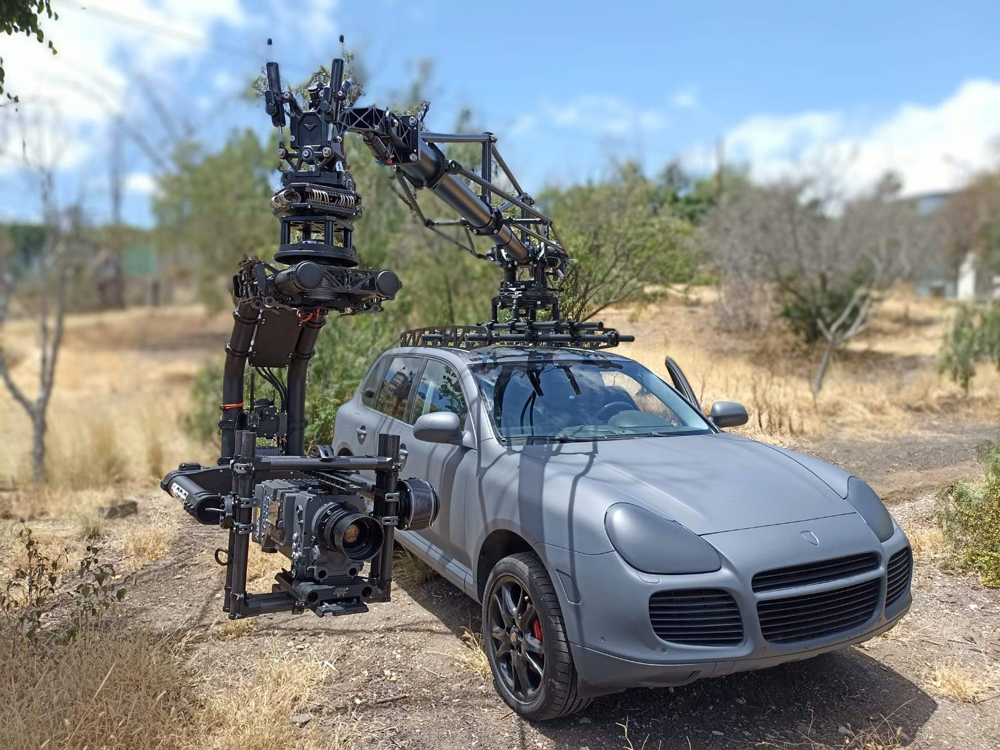
Russian arm en Canarias: qué es, cómo funciona y cuándo usarlo
Qué es un russian arm, cómo se opera la grúa estabilizada sobre vehículo y qué aporta el Motocrane Radical para rodar en las islas.
Leer artículo →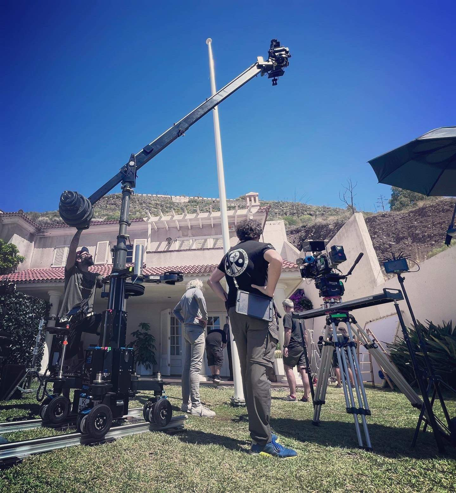
Qué hace un maquinista de cine (grip) y cuándo lo necesita tu rodaje
Funciones del maquinista, cómo se organiza el departamento, en qué se diferencia del eléctrico y cuándo incorporarlo a tu rodaje.
Leer artículo →Cómo rodar un videoclip en Canarias: movimientos de cámara y equipo de grip
Los movimientos de cámara que funcionan en un videoclip, el equipo de grip que resuelve cada uno y cómo ajustarlo al presupuesto.
Leer artículo →Alquiler de material de grip en Canarias: guía para producciones
Qué equipo de grip se alquila para un rodaje, cómo se organiza la logística entre islas y qué datos enviar para que el presupuesto salga a la primera.
Leer artículo →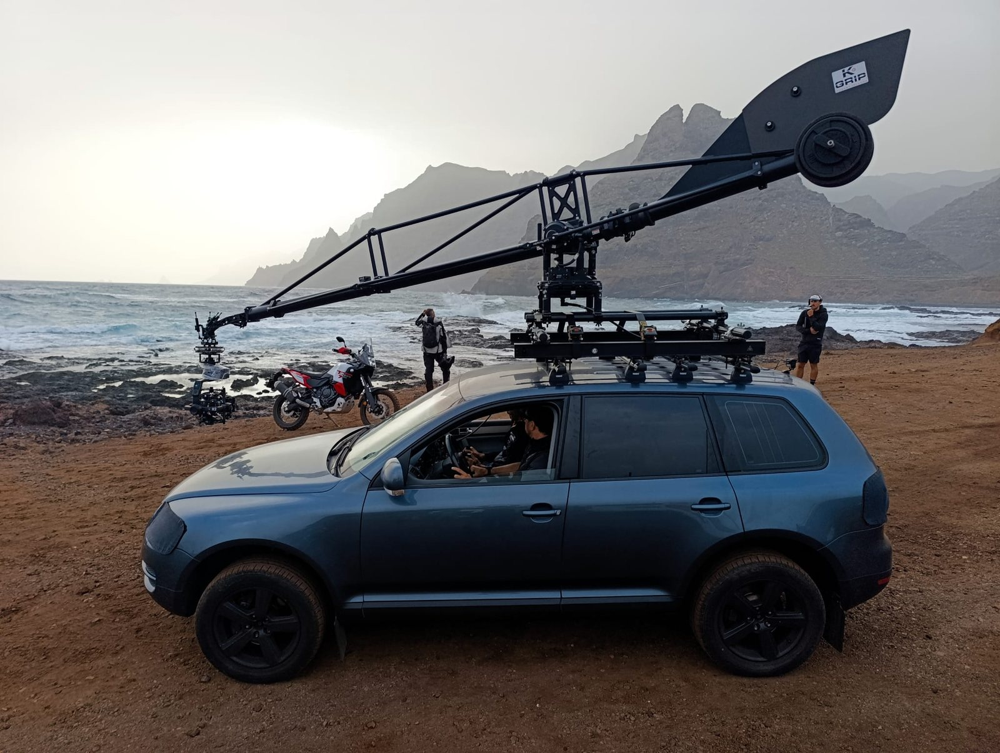
Camera car en Canarias: qué es, tipos y cuándo usarlo
Camera car con grúa, cabeza estabilizada o carmount: qué ofrece cada opción, qué planos permite y qué hay que preparar antes de rodar en las islas.
Leer artículo →Tipos de dolly para cine: Panther Classic PLUS, Cinetech Albatros y Super Falcon II
Qué es un dolly, qué tipos existen y cómo elegir entre Panther Classic PLUS, Cinetech Albatros y Cinetech Super Falcon II según cámara y plano.
Leer artículo →Rodar en Canarias: incentivos fiscales, permisos y localizaciones
Incentivos fiscales de hasta el 54 %, film commissions, permisos y logística: lo esencial para planificar un rodaje en las islas en 2026.
Leer artículo →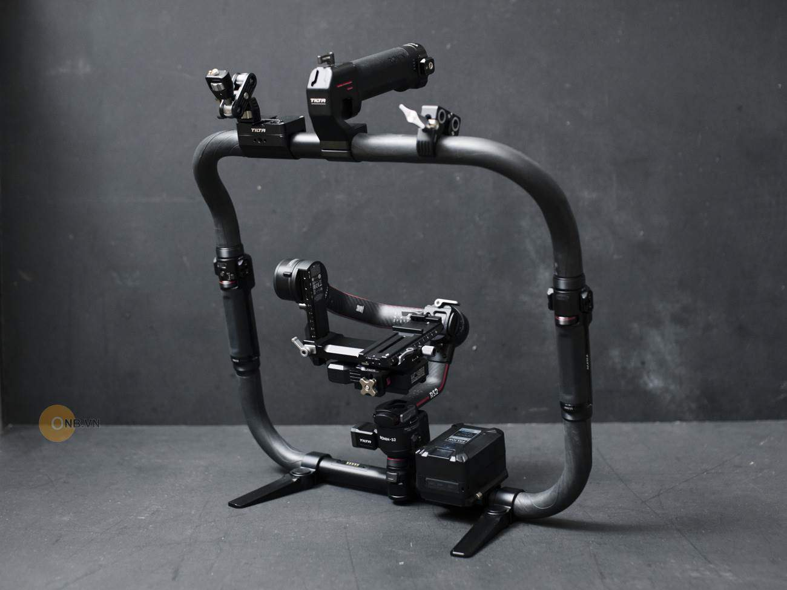
Gimbal o Easyrig: cómo elegir la estabilización para tu rodaje
DJI Ronin 2, Ronin RS3 Pro con Tilta Ring o Easyrig Vario 5: qué hace cada uno, cuándo conviene y por qué muchas veces se usan juntos.
Leer artículo →Cómo rodar un anuncio de coches: equipo de grip necesario
Los planos que no faltan en un spot de automoción y el equipo de grip que resuelve cada uno, de la grúa sobre camera car al carmount.
Leer artículo →DISPONIBILIDAD · PRESUPUESTO · PRODUCCIÓN
¿QUÉ NECESITA
TU RODAJE?
TENERIFE
Lope de Vega, 16
Santa Cruz de Tenerife
GRAN CANARIA
Calle Las Mimosas, 24
Arinaga, Agüimes 35118